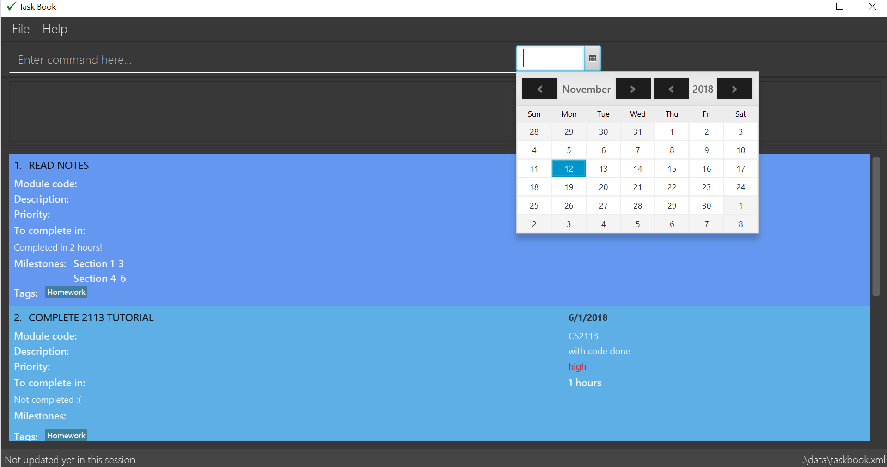

Since: Aug 2018 Licence: MIT
- 1. Introduction
- 2. Quick Start
- 3. Features
- 3.1. Viewing help :
help - 3.2. Selecting a date:
select - 3.3. Adding a task:
add - 3.4. Complete a task:
complete - 3.5. Delete a task :
delete - 3.6. Deferring a deadline:
defer - 3.7. Editing a task:
edit - 3.8. Adding a milestone:
add_milestone - 3.9. Adding a tag:
add_tag - 3.10. Removing a tag:
remove_tag - 3.11. Selecting a tag:
select_tag - 3.12. Tracking productivity :
track - 3.13. Listing all existing Tasks :
list - 3.14. Listing entered commands :
history - 3.15. Undoing previous command :
undo - 3.16. Redoing the previously undone command :
redo - 3.17. Clearing all entries :
clear - 3.18. Exiting the program :
exit - 3.19. Saving the data
- 3.20. Real time synchronisation with calendar
[coming in v2.0] - 3.21. Setting reminders
[coming in v2.0] - 3.22. Checking off completed milestones
[coming in v2.0]
- 3.1. Viewing help :
- 4. FAQ
- 5. Command Summary
1. Introduction
Task Book is a desktop task manager application that is designed for students to manage their daily tasks and ultimately, lead a more productive life. More importantly, Task Book is optimized for those who prefer to work with a Command Line Interface (CLI) while still having the benefits of a Graphical User Interface (GUI). If you can type fast, Task Book can get your management of tasks done faster than traditional paper notebooks or a mobile application. Interested? Jump to the Section 2, “Quick Start” to get started. Enjoy!
2. Quick Start
-
Ensure you have Java version
9or later installed in your Computer. -
Download the latest
taskbook.jarhere. -
Copy the file to the folder you want to use as the home folder for your Address Book.
-
Double-click the file to start the app. The GUI should appear in a few seconds.
 -
Type the command in the command box and press Enter to execute it.
e.g. typinghelpand pressing Enter will open the help window. -
Some example commands you can try:
-
list: lists all tasks for that day -
exit: exits the app
-
-
Refer to Section 3, “Features” for details of each command.
3. Features
Command Format
-
Words in
UPPER_CASEare the parameters to be supplied by the user e.g. inadd t/TASK,TASKis a parameter which can be used asadd t/Do homework.
3.1. Viewing help : help
Format: help
3.2. Selecting a date: select
Chooses a particular date to be set as the deadline for tasks to be added.
Format: select dd/DAY mm/MONTH [yyyy/YEAR] or
select DAY/MONTH[/YEAR]
|
A valid year must be between 2018 and 9999 (inclusive) |
Examples:
-
select dd/1 mm/1 -
select 1/1 -
select dd/1 mm/1 yyyy/2018 -
select 1/1/2018
A. Using select command
How it should look like:
Step 1. Entering select 1/1/2018 will select a date as the deadline for tasks to be added. Type the command into the command box as shown below.
Step 2. If you have chosen a valid date, you should be able to see a success message as shown below, highlighted with a red box.

You have successfully selected a date. Nice!
B. Using Date Picker
How it should look like:
Step 1. Alternatively, to make things even simpler, you can choose to use the Date Picker as highlighted below. To use the Date Picker, click on the calender icon.

Step 3. After clicking on the icon, you should be able to see a calendar. Use the left and right arrows to navigate to different months and years.

Step 5. Click on the date you want to select.
Step 6. A success message will be shown (refer to Figure 2).
You have successfully selected a date. Good job!
3.3. Adding a task: add
Adds a task with its module code, title, description, priority level (low, medium, high) and the number of hours (integers only) expected to complete this task, to the task book
Format: add c/MODULE_CODE t/TITLE d/DESCRIPTION p/PRIORITY h/HOURS
Examples:
-
add c/CS2113 t/Complete 2113 Tutorial d/with code done p/high h/1
3.4. Complete a task: complete
Complete a task in the task book by providing its index and the actual number of hours taken to complete the task
Format: complete i/INDEX h/HOURS_TO_COMPLETE
Examples:
-
complete i/1 h/2
3.5. Delete a task : delete
Removes a task from the task book
Format: delete [INDEX]
Examples:
-
delete 1=== Sort the taskbook:sort
Need to view the tasks in a specific order you prefer? For example, you would like the tasks to be displayed from the highest priority, so you can focus your attention on the most importan task at hand? You can sort the tasks based on their priority! |
|
Sort the tasks in the task book via priority, deadline, module, or title
Format: sort s/METHOD
Examples:
-
sort s/deadlines
Before: "sort s/deadlines" is entered

After: The list of tasks is sorted based on ascending order of the deadline
3.6. Deferring a deadline: defer
Need a way to quickly extend your deadline by a few days or up to a month? You can easily defer the deadline of your task and the deadline will be automatically adjusted. |
Defers a deadline for a task
Format: defer i/INDEX dd/DAY
|
|
Examples:
-
defer i/1 dd/04
Before: "defer i/1 dd/1" is entered

After: deadline for the first task is deferred by 1 day

3.7. Editing a task: edit
Edits one or more fields in a selected task.
Format: edit i/INDEX [t/TITLE] [d/DESCRIPTION] [c/MODULE CODE] [p/PRIORITY] [h/HOURS]
|
Examples:
-
edit i/1 t/Complete CS2113 tutorial -
edit i/1 d/Edit editTask to fit TaskBook h/4 -
edit i/1 t/Complete CS2271 tutorial d/Edit editTask to fit TaskBook c/CS2113 p/high h/4
How it should look like:
-
Entering the
edit i/1 t/Complete CS2113 tutorialcommand will edit the title of the first task on the Task Display Panel to 'Complete CS2113 tutorial'. Type the command into the Command Box as shown below.As you can see, the current title of the first task (highlighted with a red box) is 'COMPLETE CODE REFACTORING'.
-
After entering a valid command, you should see that the title of the first task has been edited to 'Complete CS2113 tutorial' and also a success message as highlighted below.

You have successfully edited the title of the task. Well done!
3.8. Adding a milestone: add_milestone
Have a task that requires a lot of things to be done? Break it up into smaller, more manageable subtasks called milestones! |
Adds a milestone to an existing task in the task book
Format: add_milestone i/INDEX m/MILESTONE DESCRIPTION r/RANK
|
Examples:
-
add_milestone i/1 m/Q1 - 3 r/1 -
add_milestone i/1 m/Q4 - 6 r/2 -
add_milestone i/1 m/Q7 & 8 r/3 -
add_milestone i/1 m/Diagrams r/4 -
add_milestone i/1 m/References r/5
Before

After

|
Rank is the level of importance assigned to that particular milestone by the user. Milestones are automatically sorted by rank with the most important one at the top (Rank 1). |
3.9. Adding a tag: add_tag
Want a way to better mark your tasks, or to quickly tell what a task is about? Adding tags to your tasks will make it easier for you to identify the tasks! |
Add a tag to a task
Format: add_tag i/INDEX t/TAG
|
|
Examples:
-
add_tag i/1 t/homework
Before: "add_tag i/1 t/homework" is entered
After: The tag "homework" is added to the first task
3.10. Removing a tag: remove_tag
Found the tags added previously to your tasks not suitable? You can remove the tags easily and conveniently! |
Removes a tag from a task
Format: remove_tag i/INDEX t/TAG
|
|
Examples:
-
remove_tag i/1 t/homework
Before: "remove_tag i/1 t/homework" is entered
After: The tag "homework" is removed from the first task
3.11. Selecting a tag: select_tag
Need to view your tasks with the specific tag? For example, viewing all the tasks which are tagged with "homework"? You can easily do it via selecting the tag you want! |
Show a list of tasks with the selected tag
Format: select_tag t/TAG
|
|
Examples:
-
select_tag t/homework
Before: "select_tag t/homework" is entered
After: A list of tasks with tag "homework" is shown

3.12. Tracking productivity : track
Tracks your productivity for all completed tasks, by returning an average productivity (in percentage).
Format: track
3.13. Listing all existing Tasks : list
Lists all the existing tasks in task book.
Format: list
3.14. Listing entered commands : history
Lists all the commands that you have entered in reverse chronological order.
Format: history
|
Pressing the ↑ and ↓ arrows will display the previous and next input respectively in the command box. |
3.15. Undoing previous command : undo
Restores the address book to the state before the previous undoable command was executed.
Format: undo
|
Undoable commands: those commands that modify the address book’s content ( |
Examples:
-
delete 1
list
undo(reverses thedelete 1command) -
track
list
undo
Theundocommand fails as there are no undoable commands executed previously. -
delete 1
clear
undo(reverses theclearcommand)
undo(reverses thedelete 1command)
3.16. Redoing the previously undone command : redo
Reverses the most recent undo command.
Format: redo
Examples:
-
delete 1
undo(reverses thedelete 1command)
redo(reapplies thedelete 1command) -
delete 1
redo
Theredocommand fails as there are noundocommands executed previously. -
delete 1
clear
undo(reverses theclearcommand)
undo(reverses thedelete 1command)
redo(reapplies thedelete 1command)
redo(reapplies theclearcommand)
3.17. Clearing all entries : clear
Clears all entries from the address book.
Format: clear
3.18. Exiting the program : exit
Exits the program.
Format: exit
3.19. Saving the data
Address book data are saved in the hard disk automatically after any command that changes the data.
There is no need to save manually.
3.20. Real time synchronisation with calendar [coming in v2.0]
TaskBook will be able to synchronise with the calendar in real time so that functionalities that require real time date tracking can be introduced.
3.21. Setting reminders [coming in v2.0]
Users will be able to set reminders that can be triggered a few days before the actual deadline to remind them that a task has to be completed.
3.22. Checking off completed milestones [coming in v2.0]
Users will soon be able to strike off (not delete!) their milestones when they have completed them for easier tracking of what they have or have not done!
4. FAQ
Q: How do I transfer my data to another Computer?
A: Install the app in the other computer and overwrite the empty data file it creates with the file that contains the data of your previous Address Book folder.
Q: Why do I get this error when I tried to add milestones with a rank of "0" or "-1"?

A: You can only enter non-zero, positive integers for rank!
Q: Why do I get this error when I tried to add a milestone?
A: You can only add milestones to existing tasks! In this case, there is only 1 task entered into the Task Book, hence attempting to add a milestone to index 2 of the Task Book will result in an error!
5. Command Summary
-
Help :
help -
Select :
select dd/DAY mm/MONTH yyyy/YEARorselect DAY/MONTH/YEAR
e.g.select dd/1 mm/1 yyyy/2018 -
Add task :
add c/MODULE_CODE t/ACTION d/DESCRIPTION p/PRIORITY_LEVEL h/HOURS_TO_COMPLETE
e.g.add c/CS2113 t/Complete 2113 Tutorial d/with code done p/high h/2 -
Complete :
complete i/INDEX h/HOURS_COMPLETED
e.g.complete i/1 h/2 -
Delete :
delete INDEXe.g.delete 1 -
Sort :
sort s/METHOD
e.g.sort s/priority -
Defer deadline :
defer i/INDEX dd/DAY mm/MONTH yyyy/YEAR
e.g.defer i/1 dd/01 mm/01 yyyy/2018 -
Edit :
edit i/INDEX [t/TITLE] [d/DESCRIPTION] [c/MODULE CODE] [p/PRIORITY] [h/HOURS]
e.g.edit i/1 t/Complete CS2271 tutorial d/Edit editTask to fit TaskBook c/CS2113 p/high h/4 -
Add milestone :
add_milestone i/INDEX m/MILESTONE DESCRIPTION r/RANK
e.g.add_milestone i/1 m/Q1 - 3 r/1 -
Track :
track -
List :
list -
History :
history -
Undo :
undo -
Redo :
redo -
Clear :
clear -
Exit :
exit